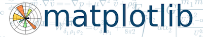

Design
I used to do a bit of sculpture, painting, and drawing. Now, I just contribute web logos for random sites (listed below from newest to oldest).
Scikits-image Logo and Banner
I'm a collaborator for scikits-image, which is an image-processing library. So the basic idea I had was to take the SciPy (which is sort of the parent of all the "scikits") logo and combine it with some image processing. I chose an edge filter (Sobel) as the image processing step. The logo is coded using scikits-image plus the standard scientific Python tools (NumPy, SciPy, and matplotlib)
Matplotlib Banner
I'm an occasional contributor to matplotlib, so when someone on the mailing list mentioned a new logo, I submitted my attempt. I can't really say I designed the matplotlib banner; I came up with a concept and went through a few iterations with the creator of matplotlib: John Hunter.
In case you were wondering matplotlib is a Python plotting library, and the entire banner logo is generated with code. Since I helped with the design, I got to choose some of the equations in the background (notice Navier-Stokes at the top).